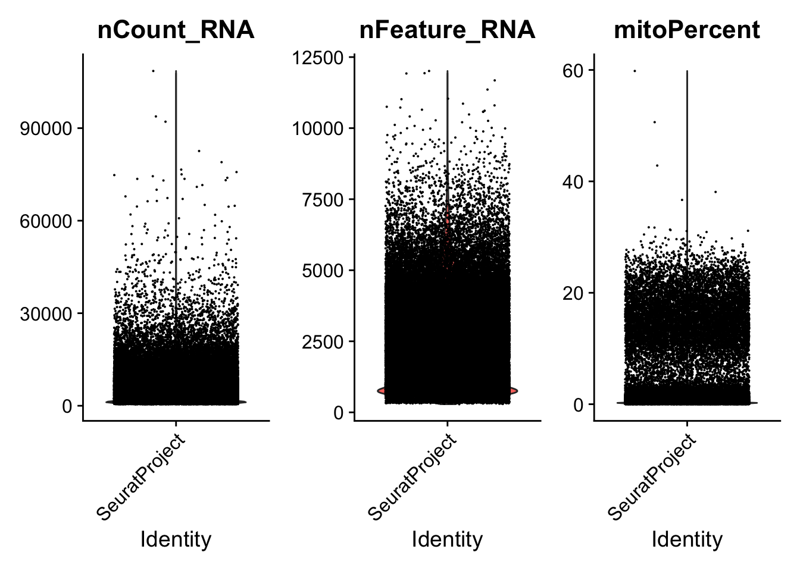
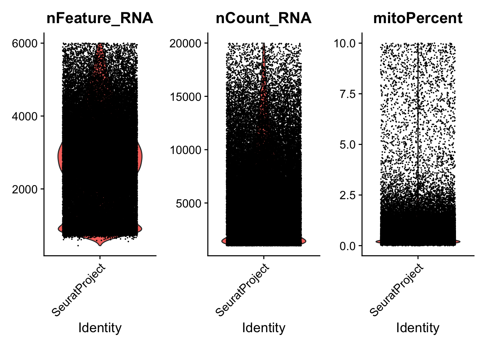
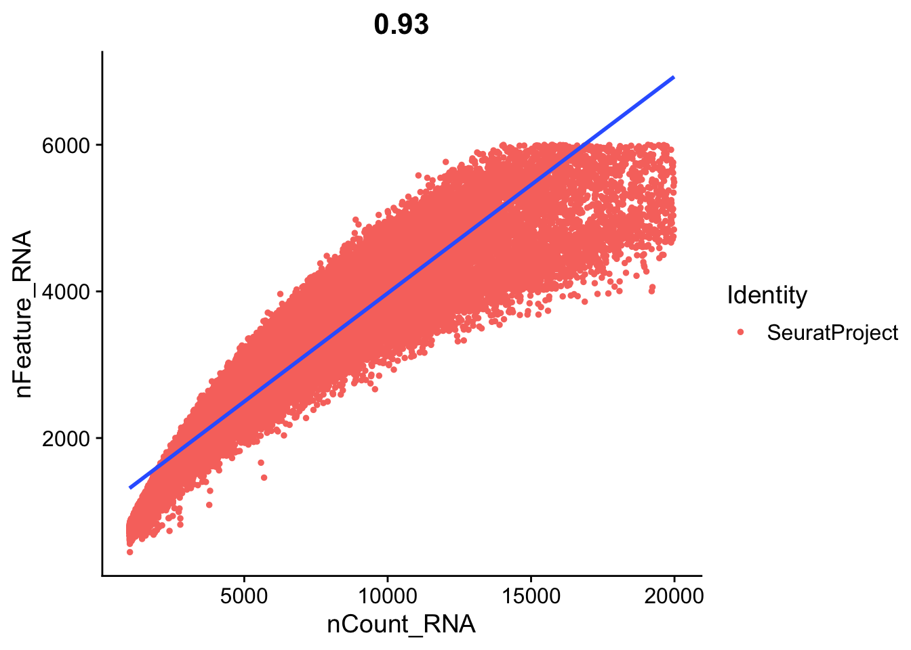
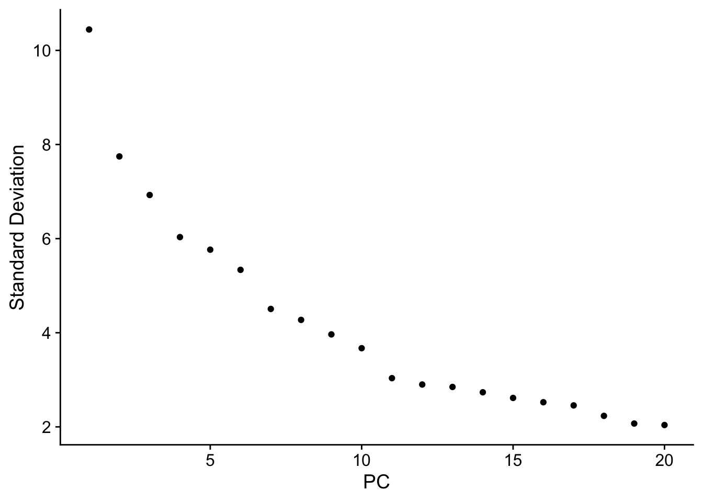
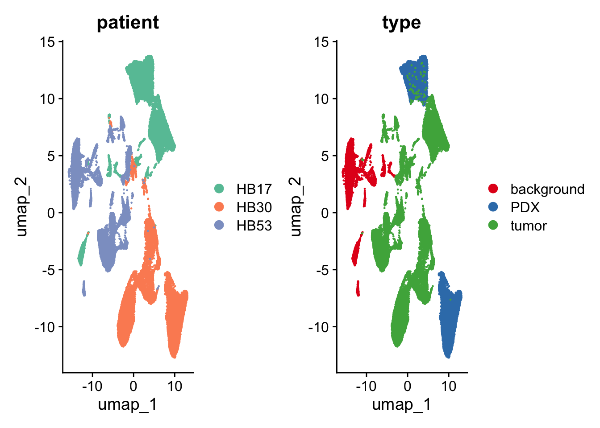
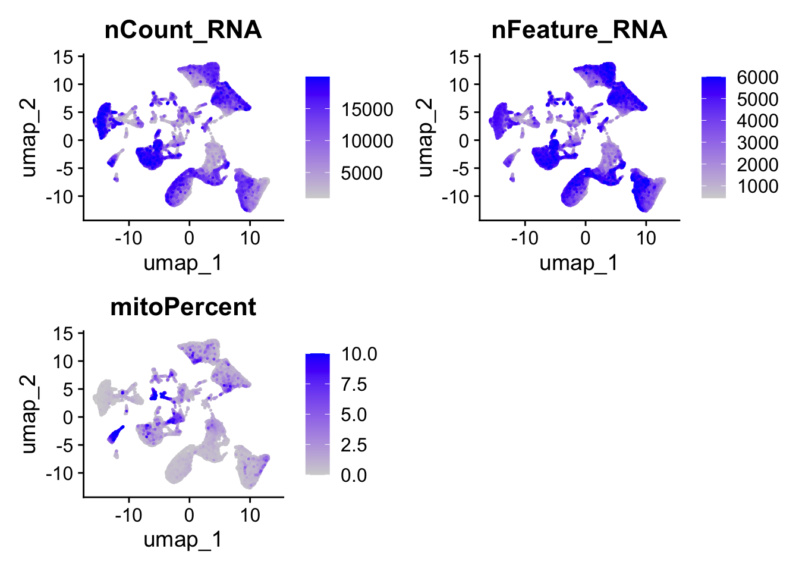
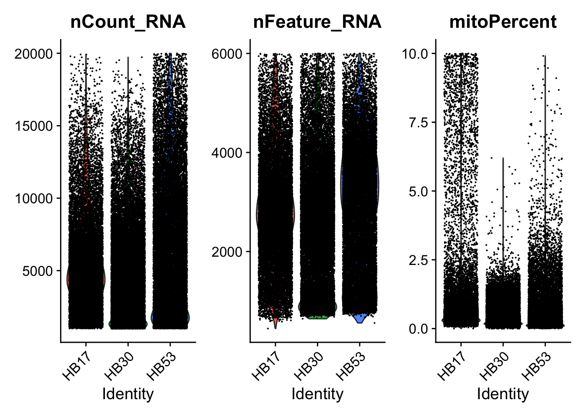
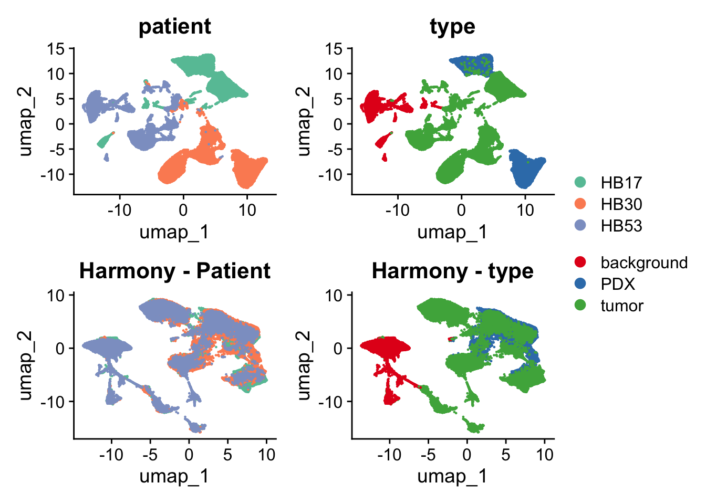

Code
library(Seurat)
library(tidyverse)
library(gridExtra)
library(harmony)
library(patchwork)
library(RColorBrewer)library(Seurat)
library(tidyverse)
library(gridExtra)
library(harmony)
library(patchwork)
library(RColorBrewer)dirs <- list.dirs(path = "/Users/aba189/Downloads/GSE180665_RAW/",
recursive = F, full.names = F)
for(i in dirs){
name <- gsub("_filtered_feature_bc_matrix","", i)
cts <- ReadMtx(mtx = paste0("/Users/aba189/Downloads/GSE180665_RAW/", i, "/matrix.mtx.gz"),
features = paste0("/Users/aba189/Downloads/GSE180665_RAW/", i,"/features.tsv.gz"),
cells = paste0("/Users/aba189/Downloads/GSE180665_RAW/", i,"/barcodes.tsv.gz"))
# create seurat objects
assign(name, CreateSeuratObject(counts = cts))
}Got names from ls() (my R environment)
Got numbers from the ls()
merged_seurat <- merge(HB17_background,
y = c(HB17_PDX, HB17_tumor, HB30_PDX,
HB30_tumor, HB53_background,HB53_tumor),
add.cell.ids = ls()[3:9], # to assign each cell for each dataset
project = 'HB')merged_seurat@meta.data <- merged_seurat@meta.data %>% mutate(sample = rownames(.)) %>%
separate(sample, into = c("patient", "type", "barcode"), sep = "_") # Mitochondrial fraction (human symbols use MT-)
merged_seurat$mitoPercent <- PercentageFeatureSet(merged_seurat, pattern = "^MT-")
# Optional extras (uncomment if needed)
# merged_seurat[["percent.ribo"]] <- PercentageFeatureSet(merged_seurat, pattern = "^RPS|^RPL")
# merged_seurat[["percent.hb"]] <- PercentageFeatureSet(merged_seurat, pattern = "^HB[AB]")VlnPlot(merged_seurat, features = c("nCount_RNA","nFeature_RNA", "mitoPercent"))
merged_seurat_f <- subset(merged_seurat,
subset = nFeature_RNA >= 200 & nFeature_RNA <= 6000 &
nCount_RNA >= 1000 & nCount_RNA <= 20000 &
mitoPercent <= 10)VlnPlot(merged_seurat_f, features = c("nFeature_RNA", "nCount_RNA", "mitoPercent"))
# Relationship between counts and detected genes
FeatureScatter(merged_seurat_f, feature1 = "nCount_RNA", feature2 = "nFeature_RNA") +
geom_smooth(method = 'lm')
merged_seurat_f <- NormalizeData(merged_seurat_f,
normalization.method = "LogNormalize",
scale.factor = 10000)
merged_seurat_f <- FindVariableFeatures(object = merged_seurat_f)
merged_seurat_f <- ScaleData(object = merged_seurat_f)merged_seurat_f <- RunPCA(merged_seurat_f,
features = VariableFeatures(object = merged_seurat_f))
# determine dimensionality of the data
ElbowPlot(merged_seurat_f)
merged_seurat_f <- FindNeighbors(merged_seurat_f, dims = 1:20)
merged_seurat_f <- FindClusters(merged_seurat_f)Modularity Optimizer version 1.3.0 by Ludo Waltman and Nees Jan van Eck
Number of nodes: 60342
Number of edges: 2159800
Running Louvain algorithm...
Maximum modularity in 10 random starts: 0.9403
Number of communities: 41
Elapsed time: 10 secondsmerged_seurat_f <- RunUMAP(merged_seurat_f, dims = 1:20)p1 <- DimPlot(merged_seurat_f, reduction = "umap", group.by = "patient",) +
scale_color_brewer(palette = "Set2")
p2 <- DimPlot(merged_seurat_f, reduction = "umap", group.by = "type") +
scale_color_brewer(palette = "Set1")
(p1 | p2)
Plot to see the difference between sequencing depth for each patient, indicating batch effect
FeaturePlot(merged_seurat_f, c("nCount_RNA","nFeature_RNA","mitoPercent"), order=TRUE)
plot to see median depth for across patients
VlnPlot(merged_seurat_f, c("nCount_RNA","nFeature_RNA","mitoPercent"), group.by="patient")
Integrate clusters from the same patient together
merged_seurat_f <- RunHarmony(merged_seurat_f, group.by.vars = "patient",
dims.use = 1:20, theta = 6)
merged_seurat_f <- FindNeighbors(merged_seurat_f, reduction = "harmony", dims = 1:20)
merged_seurat_f <- FindClusters(merged_seurat_f, resolution = 0.1)Modularity Optimizer version 1.3.0 by Ludo Waltman and Nees Jan van Eck
Number of nodes: 60342
Number of edges: 2006460
Running Louvain algorithm...
Maximum modularity in 10 random starts: 0.9755
Number of communities: 11
Elapsed time: 12 secondsmerged_seurat_f <- RunUMAP(merged_seurat_f, reduction = "harmony", dims = 1:20)p3 <- DimPlot(merged_seurat_f, reduction = "umap", group.by = "patient") +
scale_color_brewer(palette = "Set2") + ggtitle("Harmony - Patient")
p4 <- DimPlot(merged_seurat_f, reduction = "umap", group.by = "type") +
scale_color_brewer(palette = "Set1") + ggtitle("Harmony - type")
(p1 | p2) / (p3 | p4) + plot_layout(guides = "collect")